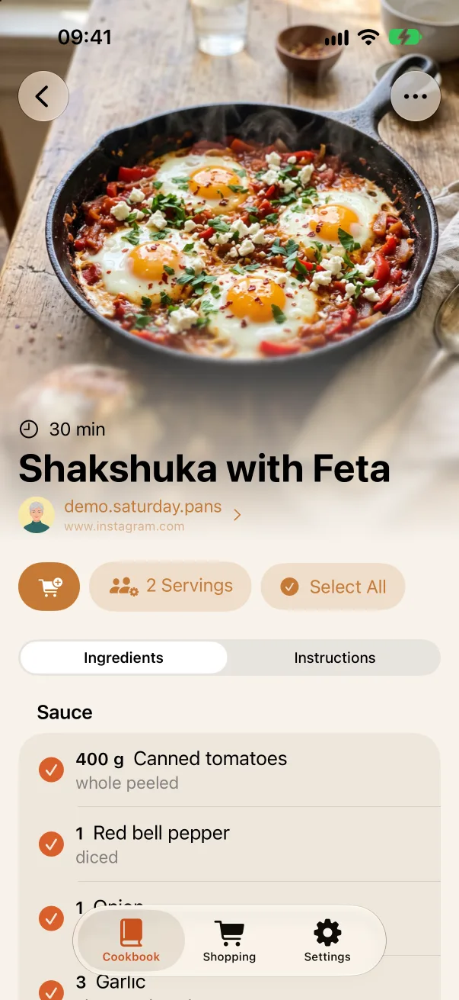

MyReciPal Recipe app for iPhone, beta on TestFlight
Every recipe meant reopening Instagram, digging to my saved folder, finding the right post, and reading the caption while the video played. My phone would lock and I would start over.
So MyReciPal saves recipes from TikTok, Instagram and any website into one library and builds the shopping list with one tap. SwiftUI and SwiftData on the phone, a Laravel API behind it, and two-way sync with PostgreSQL that settles conflicts by version.
It reads the caption or the web page. If the steps only live in the video, it won't invent them.

